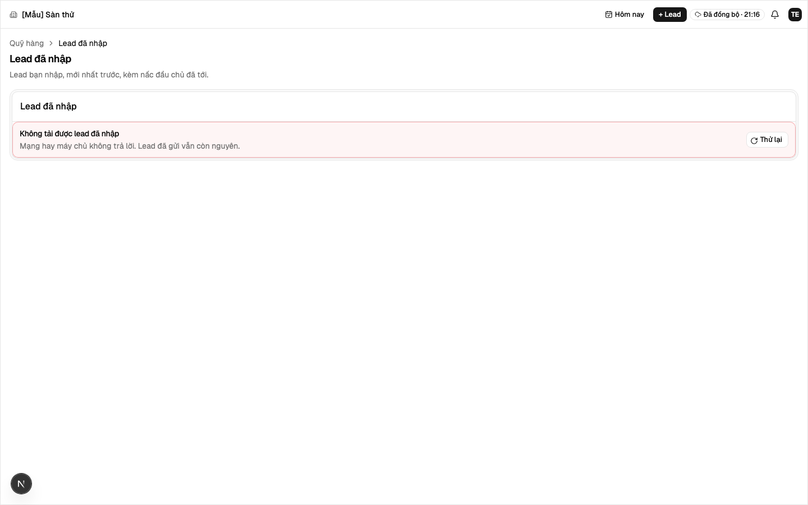
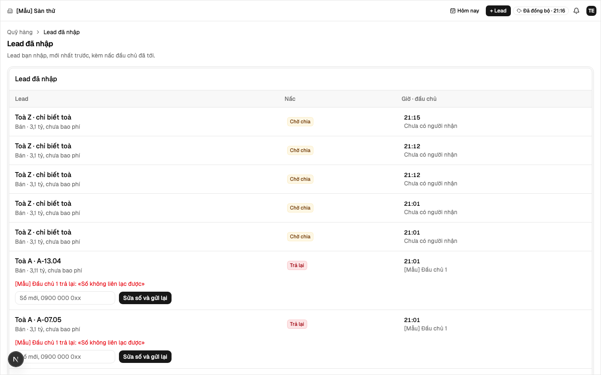
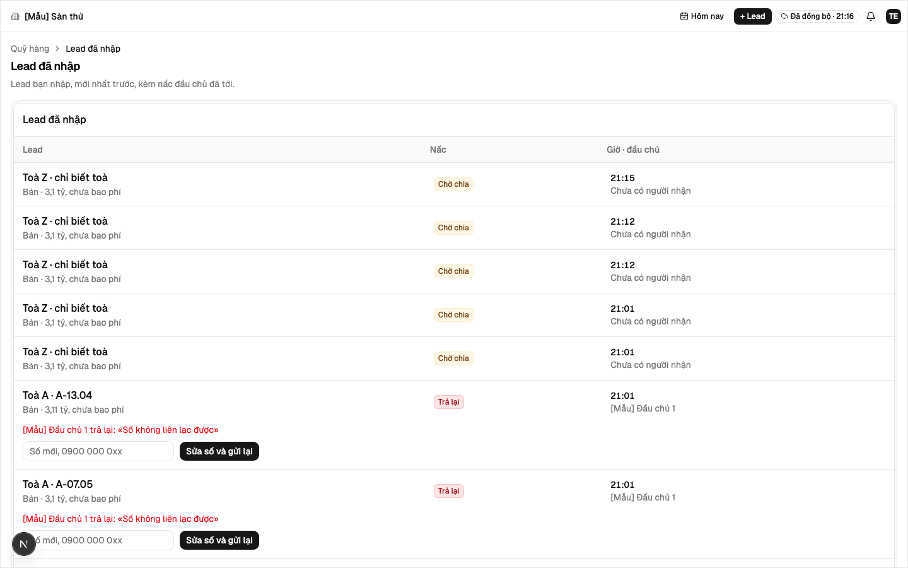
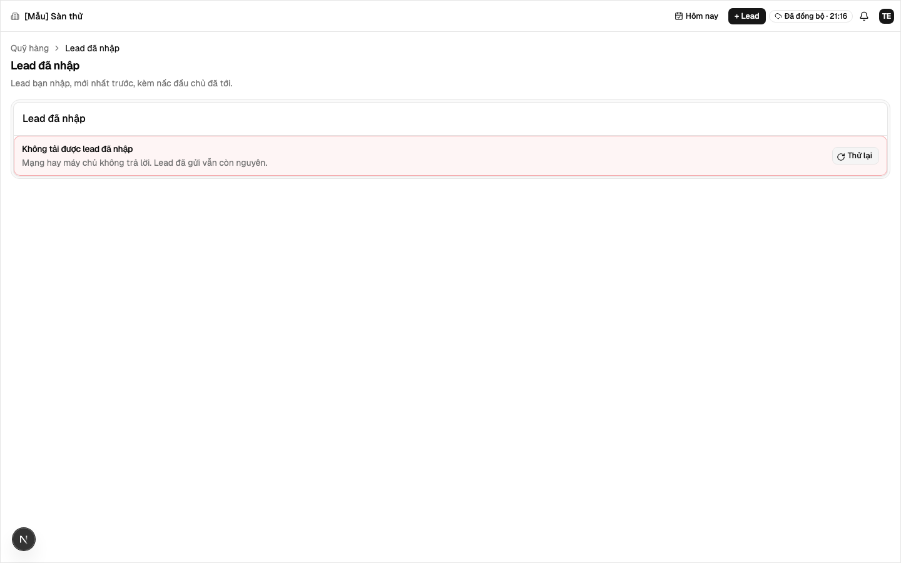
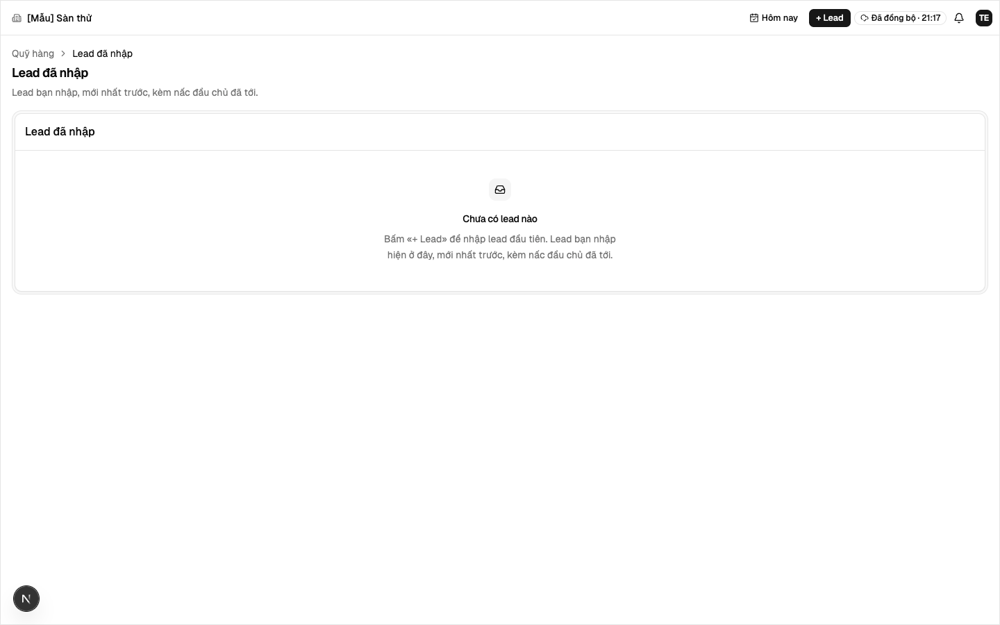
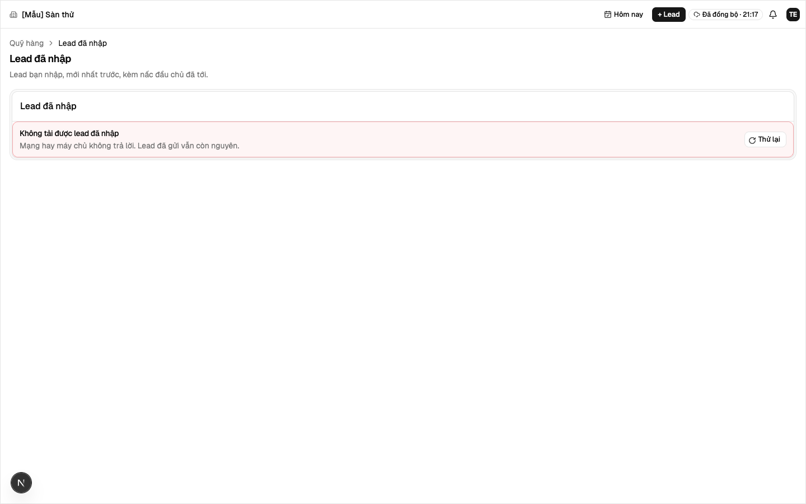

"Lead đã nhập báo lỗi có nút Thử lại khi máy chủ trả nội dung hỏng, không treo mãi ở khung chờ"
Vì sao làm
Khi danh sách Lead đã nhập nhận được phản hồi thành công nhưng nội dung hỏng, màn báo lỗi và có nút Thử lại, không treo mãi ở khung chờ.
Đã hứa
- AC-1 — — Nội dung không đọc được thì báo.** Given telesales mở Lead đã nhập · When lời đọc danh sách trả 200 mà thân không phải JSON · Then hết khung chờ, có đúng một khối báo lỗi và một «Thử lại».
- AC-2 — — JSON sai khuôn thì báo, màn không vỡ.** Given telesales mở Lead đã nhập · When lời đọc trả 200 với JSON không phải danh sách, hay danh sách có phần tử không phải một lead · Then có đúng một khối báo lỗi và một «Thử lại», trang không vỡ.
- AC-3 — — Có lối ra.** Given màn đang báo lỗi vì nội dung hỏng · When bấm «Thử lại» lúc máy chủ trả đúng, hay mạng trở lại lúc máy chủ trả đúng · Then danh sách hiện, khối báo lỗi hết. Bấm «Thử lại» hay mạng trở lại mà nội dung vẫn hỏng thì màn về khối báo lỗi, không đứng ở khung chờ.
- AC-4 — — Phản hồi đúng giữ nguyên.** Given lời đọc trả 200 với danh sách có lead, danh sách rỗng, trả mã lỗi, hay lời gọi không tới máy chủ · When mở màn · Then lần lượt hiện danh sách, «Chưa có lead nào», khối báo lỗi có «Thử lại», khối báo lỗi có «Thử lại»; khuôn và sàn thiết kế sạch.
Thiết kế
_acceptance/va-lead-da-nhap-than-hong/design.md
Quyết định
- 2026-11-09 · Máy · approach · S1 — Đã tra tri thức: va-lead-da-nhap-than-hongKho đã khai tri_thuc — bước thiết kế tra trang trước khi chọn.
- 2026-11-09 · Máy · approach · S1 — Đọc danh sách qua hàm đọc chung của Hôm nay, không viết kiểm riêng ở màn này.Hàm ấy đã biến mã lỗi, mất mạng, thân hỏng, nội dung không phải mảng thành đọc hỏng, và Hôm nay dùng nó cho chính địa chỉ này.
- 2026-11-09 · Máy · descope · S1 — KHÔNG tự thử lại sau 2 giây ở màn này; chỉ báo và có nút Thử lại.Câu giao và điều kiện bật của hàng chỉ đòi màn báo và nút Thử lại.
- 2026-11-09 · Máy · descope · S1 — bỏ design-pass — không đổi gì trên màn, chỉ đổi đường đọc dữ liệu vào khối báo lỗi đang có.Trạng thái lỗi của màn đã dựng và chấm ở hàng trước; hàng này không thêm khối hay bố cục.
- 2026-11-09 · Máy · descope · S1 — bỏ design-pass — không đổi gì trên màn, chỉ đổi đường đọc dữ liệu vào khối báo lỗi đang có.Trạng thái lỗi của màn đã dựng và chấm ở hàng trước; hàng này không thêm khối hay bố cục.
- 2026-11-09 · Máy · approach · S1 — Đọc danh sách qua hàm đọc chung của Hôm nay, thêm điều kiện mỗi phần tử phải là một lead; có phần tử sai khuôn thì cả lần đọc là hỏng.Câu giao đòi nội dung hỏng thì màn báo và có nút Thử lại; danh sách có phần tử sai khuôn cũng là nội dung hỏng, và màn dựng từng dòng từ trường của lead.
- 2026-11-09 · Máy · descope · S1 — bỏ design-pass — không đổi gì trên màn, chỉ đổi đường đọc dữ liệu vào khối báo lỗi đang có.Hàng không thêm khối hay bố cục; ảnh khối lỗi của đúng trạng thái này có ở bài nhìn màn E1b lúc chấm.
- 2026-11-09 · Người · seal · gate1 —
- 2026-11-09 · Máy · fix · S4-r1 — Một lead phải đủ mọi trường màn dựng dòng từ đó và ngày đọc được; thiếu hay sai một trường thì cả lần đọc là hỏng.Lượt chấm 1 chỉ ra phần tử có đủ mã, toà, nấc mà ngày hỏng làm vỡ màn, trái AC-2; siết điều kiện ở leads/mine/nguon-that.tsx, lead mẫu đủ trường, thêm bảng 17 ca và 3 vị trí.
- 2026-11-09 · Máy · revisit · gate2 — Ngoài-1: ghi Known limitsmáy tự định tuyến theo đề xuất S4 «known-limits» — kho bật feature_loop.ngoai_n_tu_dinh_tuyen
- 2026-11-09 · Máy · revisit · gate2 — Ngoài-2: ghi Known limitsmáy tự định tuyến theo đề xuất S4 «known-limits» — kho bật feature_loop.ngoai_n_tu_dinh_tuyen
- 2026-11-09 · Máy · revisit · gate2 — Ngoài-3: ghi Known limitsmáy tự định tuyến theo đề xuất S4 «known-limits» — kho bật feature_loop.ngoai_n_tu_dinh_tuyen
- 2026-11-09 · Máy · revisit · gate2 — Ngoài-4: ghi Known limitsmáy tự định tuyến theo đề xuất S4 «known-limits» — kho bật feature_loop.ngoai_n_tu_dinh_tuyen
Bằng chứng
Các eval
| Eval | Tiêu chí | Loại | Verdict | run_id | verified_at |
|---|---|---|---|---|---|
| E1 | AC-1 | test | PASS | minted-va-lead-da-nhap-than-hong-E1-r2 | 2026-11-09T14:12:40Z |
| E1b | AC-1 | ui-check | PASS | minted-va-lead-da-nhap-than-hong-E1b-r2 | 2026-11-09T14:12:40Z |
| E2 | AC-2 | test | PASS | minted-va-lead-da-nhap-than-hong-E2-r2 | 2026-11-09T14:12:40Z |
| E2b | AC-2 | ui-check | PASS | minted-va-lead-da-nhap-than-hong-E2b-r2 | 2026-11-09T14:12:40Z |
| E3b | AC-3 | ui-check | PASS | minted-va-lead-da-nhap-than-hong-E3b-r2 | 2026-11-09T14:12:40Z |
| E4 | AC-4 | test | PASS | minted-va-lead-da-nhap-than-hong-E4-r2 | 2026-11-09T14:12:40Z |
| E4b | AC-4 | ui-check | PASS | minted-va-lead-da-nhap-than-hong-E4b-r2 | 2026-11-09T14:12:40Z |
| E5 | AC-4 | script | PASS | minted-va-lead-da-nhap-than-hong-E5-r2 | 2026-11-09T14:12:40Z |
| E6 | AC-4 | script | PASS | minted-va-lead-da-nhap-than-hong-E6-r2 | 2026-11-09T14:12:40Z |
Chi tiết từng eval
PASS E1 · test
AC-1: — Nội dung không đọc được thì báo.** Given telesales mở Lead đã nhập · When lời đọc danh sách trả 200 mà thân không phải JSON · Then hết khung chờ, có đúng một khối báo lỗi và một «Thử lại».
npm test -w @quy-hang/web ℹ duration_ms 11064.890583
PASS E1b · ui-check
AC-1: — Nội dung không đọc được thì báo.** Given telesales mở Lead đã nhập · When lời đọc danh sách trả 200 mà thân không phải JSON · Then hết khung chờ, có đúng một khối báo lỗi và một «Thử lại».
PASS E2 · test
AC-2: — JSON sai khuôn thì báo, màn không vỡ.** Given telesales mở Lead đã nhập · When lời đọc trả 200 với JSON không phải danh sách, hay danh sách có phần tử không phải một lead · Then có đúng một khối báo lỗi và một «Thử lại», trang không vỡ.
npm test -w @quy-hang/web ℹ duration_ms 11064.890583
PASS E2b · ui-check
AC-2: — JSON sai khuôn thì báo, màn không vỡ.** Given telesales mở Lead đã nhập · When lời đọc trả 200 với JSON không phải danh sách, hay danh sách có phần tử không phải một lead · Then có đúng một khối báo lỗi và một «Thử lại», trang không vỡ.

PASS E3b · ui-check
AC-3: — Có lối ra.** Given màn đang báo lỗi vì nội dung hỏng · When bấm «Thử lại» lúc máy chủ trả đúng, hay mạng trở lại lúc máy chủ trả đúng · Then danh sách hiện, khối báo lỗi hết. Bấm «Thử lại» hay mạng trở lại mà nội dung vẫn hỏng thì màn về khối báo lỗi, không đứng ở khung chờ.





PASS E4 · test
AC-4: — Phản hồi đúng giữ nguyên.** Given lời đọc trả 200 với danh sách có lead, danh sách rỗng, trả mã lỗi, hay lời gọi không tới máy chủ · When mở màn · Then lần lượt hiện danh sách, «Chưa có lead nào», khối báo lỗi có «Thử lại», khối báo lỗi có «Thử lại»; khuôn và sàn thiết kế sạch.
npm test -w @quy-hang/web ℹ duration_ms 11064.890583
PASS E4b · ui-check
AC-4: — Phản hồi đúng giữ nguyên.** Given lời đọc trả 200 với danh sách có lead, danh sách rỗng, trả mã lỗi, hay lời gọi không tới máy chủ · When mở màn · Then lần lượt hiện danh sách, «Chưa có lead nào», khối báo lỗi có «Thử lại», khối báo lỗi có «Thử lại»; khuôn và sàn thiết kế sạch.



PASS E5 · script
AC-4: — Phản hồi đúng giữ nguyên.** Given lời đọc trả 200 với danh sách có lead, danh sách rỗng, trả mã lỗi, hay lời gọi không tới máy chủ · When mở màn · Then lần lượt hiện danh sách, «Chưa có lead nào», khối báo lỗi có «Thử lại», khối báo lỗi có «Thử lại»; khuôn và sàn thiết kế sạch.
design-floor-khuon.mjs --kiem --root . 2 tệp giao diện ngoài bản đồ
PASS E6 · script
AC-4: — Phản hồi đúng giữ nguyên.** Given lời đọc trả 200 với danh sách có lead, danh sách rỗng, trả mã lỗi, hay lời gọi không tới máy chủ · When mở màn · Then lần lượt hiện danh sách, «Chưa có lead nào», khối báo lỗi có «Thử lại», khối báo lỗi có «Thử lại»; khuôn và sàn thiết kế sạch.
design-floor-s4.mjs --root . (không có dòng lệch nào)
Eval không phân biệt (Analyst)
Vòng verify
- Round 1: lịch sử vòng đầu nằm ở run-log và báo cáo vòng trước; baseline cuối đo ở vòng này.
- Round 2: cả chín eval (E1, E1b, E2, E2b, E3b, E4, E4b, E5, E6) và bảy lệnh suite đều đạt trên commit 96a9df41; verdict PASS.
Tài nguyên
| Khối | Tác tử | Token đầu ra |
|---|---|---|
| S4 round 1 | 23 | 87.089 |
| S4 round 2 | 24 | 87.193 |
2 lượt chấm · tổng 174.282 token
Giới hạn và ngoài hợp đồng
- Tự thử lại sau 2 giây ở màn này — câu giao chỉ đòi báo và có «Thử lại».
- Nội dung hỏng ở nút «Sửa số và gửi lại» — đường ghi, không thuộc lỗi treo khung chờ của danh sách.
Giao
chưa ghi quan sát production
Giá trị
- Câu hỏi phép đo trả lời: [đề xuất] đã đạt «Giả API trả 200 với nội dung không đọc được: màn hiện câu báo và nút Thử lại; bấm khi API về đúng thì danh sách hiện» chưa? — chưa đo
- Kết quả nào là SỐNG: [đề xuất] Giả API trả 200 với nội dung không đọc được: màn hiện câu báo và nút Thử lại; bấm khi API về đúng thì danh sách hiện — chưa đo
- Kết quả nào là CHẾT: [đề xuất] chưa đạt «Giả API trả 200 với nội dung không đọc được: màn hiện câu báo và nút Thử lại; bấm khi API về đúng thì danh sách hiện» khi hết timebox — chưa đo
- Timebox: một vòng, không phiên nghiệm thu — hàng vá, lưới là hợp đồng và lượt chấm. — chưa đo